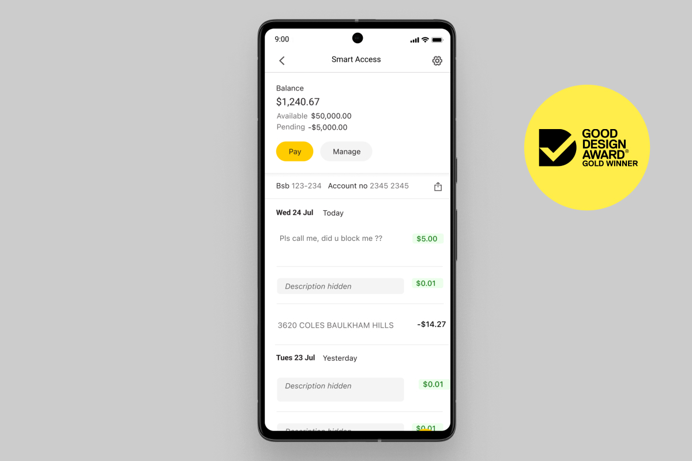
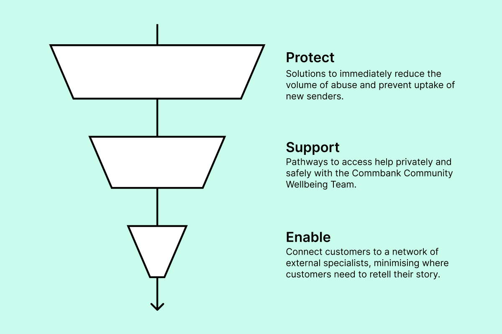
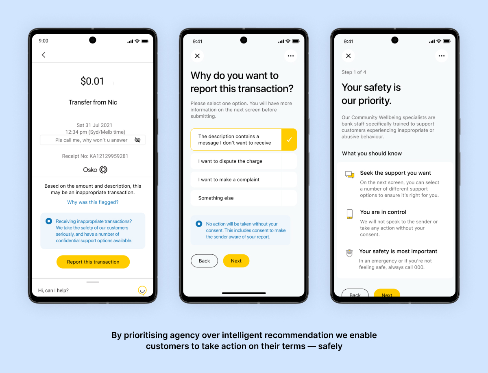
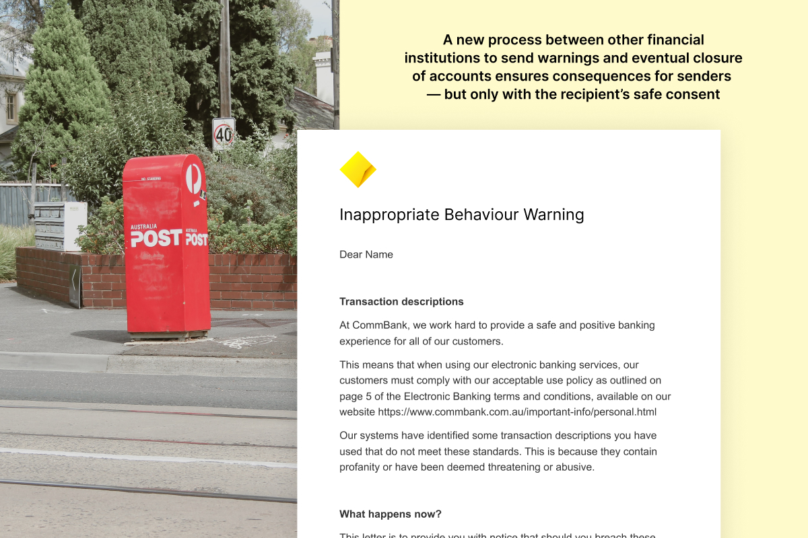
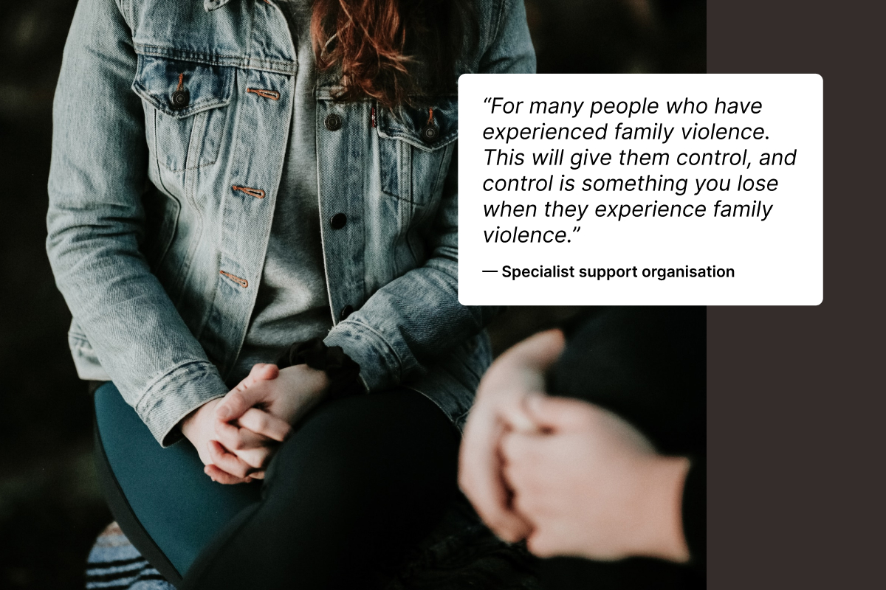
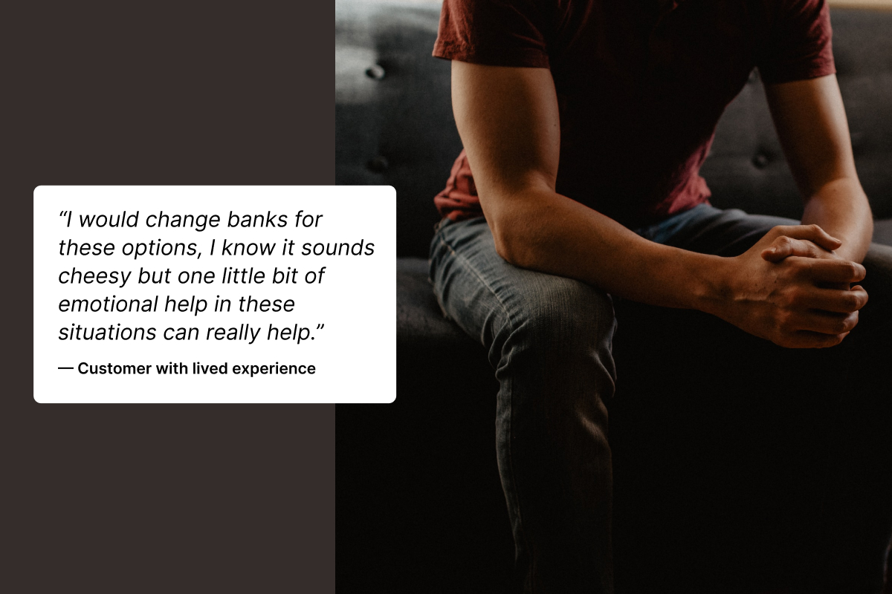
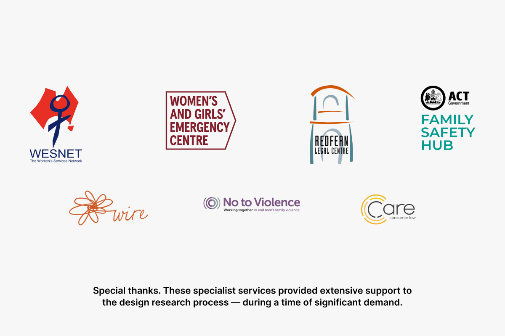

Safety by Design
Strategy
Abuse in transaction descriptions (AITD) are a new insidious form of online abuse sent through bank transactions. Currently unblockable and intimately tied to one’s day-to-day life, CommBank needed immediate and long-lasting solutions to make banking safer. Validated with customers, Commbank’s Community Wellbeing Team frontline staff and seven safety advocacy organisations.
Outputs
Links







As the New Payments Platform (NPP) increases the length of bank transaction descriptions, perpetrators are subverting this feature to send unblockable messages to harass, intimidate and abuse. Intertwined with finance and daily lives, the impact is immense.
This abuse is becoming more commonplace and at higher severity. Working with data scientists at CommBank, we determined 582 unique senders of abusive transactions in July 2021, with a 193% y.o.y increase in worst of the worst abusive transactions.
This abuse is becoming more commonplace and at higher severity. Working with data scientists at CommBank, we determined 582 unique senders of abusive transactions in July 2021, with a 193% y.o.y increase in worst of the worst abusive transactions.
With future NPP features like image and document attachments upcoming, the bandwidth for abuse continues to widen.
We developed a safe intervention strategy to identify and assess abusive transactions, alongside 15 prototypes of long-term future processes to deliver immediate and sustainable impact.
We developed a safe intervention strategy to identify and assess abusive transactions, alongside 15 prototypes of long-term future processes to deliver immediate and sustainable impact.
Protect
Solutions to immediately reduce the volume of abuse and prevent uptake of new senders.
Support
Pathways to access help privately and safely with the Commbank Community Wellbeing Team.
Enable
Connect customers to a network of external specialists, minimising where customers need to retell their story.
Designed in collaboration with support organisations and customers to ensure that interventions were safe, carried out with consent and fulfilled the role that customers expect their bank to play.
Solutions to immediately reduce the volume of abuse and prevent uptake of new senders.
Support
Pathways to access help privately and safely with the Commbank Community Wellbeing Team.
Enable
Connect customers to a network of external specialists, minimising where customers need to retell their story.
Designed in collaboration with support organisations and customers to ensure that interventions were safe, carried out with consent and fulfilled the role that customers expect their bank to play.
Early on, we realised that the definition of abuse is far greater and more nuanced than simply blocking profanity as Commbank’s previous word filter did. We developed a new definition that includes harassment, hate speech, stalking, coercive control, threats and intimidation, humiliation and condescension, manipulation and unwanted sexual requests; in addition to offensive language intended to control and cause harm.
We worked closely with Commbank’s AI Labs to embed this within their machine learning technology. We developed other indicators such as frequency, cadence, monetary amount, relationship to the sender and more as factors to flag, for humans to act on.
We worked closely with Commbank’s AI Labs to embed this within their machine learning technology. We developed other indicators such as frequency, cadence, monetary amount, relationship to the sender and more as factors to flag, for humans to act on.